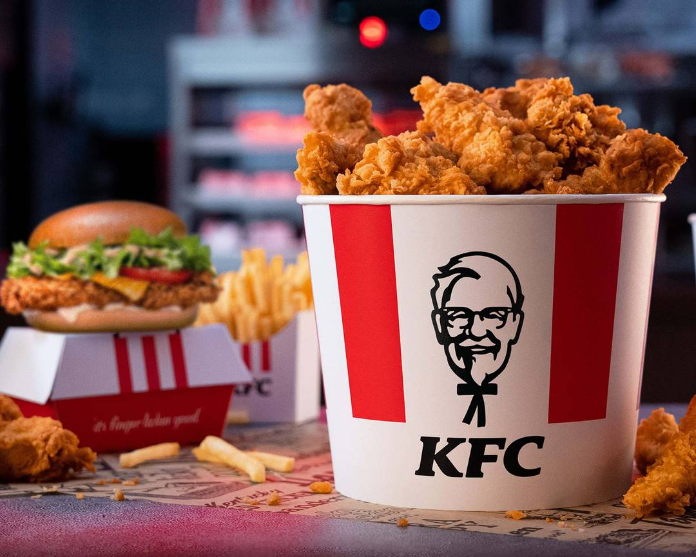

 KFC, short for Kentucky Fried Chicken, is one of the most iconic fast-food chains globally, renowned for its signature fried chicken. The brand was founded by Colonel Harland Sanders in 1952 in Corbin, Kentucky. Sanders developed a unique recipe featuring a secret blend of '11 herbs and spicesTM' that quickly gained popularity and became a household name. Over the years, KFC has expanded into a global phenomenon, with thousands of locations in more than 150 countries, making it one of the most recognized and beloved brands worldwide. KFC is particularly famous for its crispy fried chicken, which is served in various forms, including buckets, sandwiches, wraps and more. The brand has always maintained its commitment to e quality, using fresh ingredients and ensuring that each piece of chicken is cooked to perfection. This dedication to excellence has earned KFC a loyal customer base that spans generations. In addition to its classic offerings, KFC has KFC continuously innovated its menue to cater to the evolving tastes and perferences of its customers. From introducing new flavors like the spicy Zinger burger so offering healthier options and vegetarian meals in select regions, KFC strives to meet the diverse needs of its global audience. Despite these innovatiom, the brand remains true to its roots, with the original recipe chicken still being a best-seller. Beyond its culinary achievements, KFC is also commited to making a positive impact on the communities it serves. The company is actively involved in various sustainability initiatives, focusing on reducing its environmental footprint and promoting responsible sourcing practices. KFC also engages in charitable efforts, supporting local communities through donations, volunteer work, and partnerships with various organizations. KFC's marketing and brand identity have played a significant role in its success. The image of Colonel Sanders, with his distinctive white suit and goatee, has become synonymous with the brand, symbolizing its commitments to quality, tradition, and hospitality. The company has also embraced modern marketing trends, utilizing social media and digital platforms to engage with a new generation of customers, ensuring that the KFC legacy continues to thrive. In conclusion, KFC's rich history, comitment to quality, and dedication to innovation have solidified its place as a leader in the fast-food industry. Whether you're enjoying a bucket of fried chicken with family and friendsor trying one of the brand's new offerings, KFC remains a beloved choice for millions of people around d the world. The brand's ongoing efforts to adapt tochanging consumer preferences while staying true to its core values ensure that KFC will continue to be a favorite for generations to come.